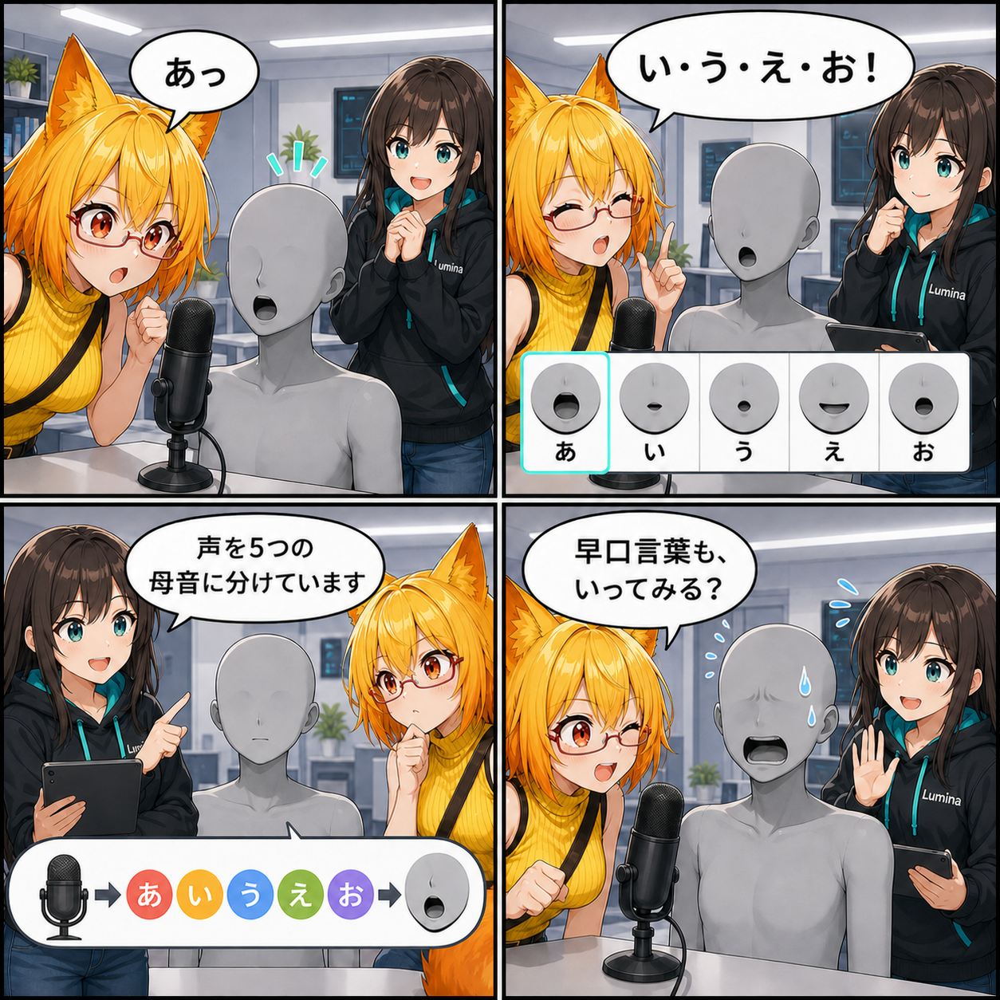

「あ」に口が追いつく。声から五つの母音を動かした日
マイク音声を五つの母音へ解析し、VAB・VRMの口形状へ反映するリアルタイムリップシンクを追加しました。
6140dfa（「uLipSyncリップシンクと対話診断を追加」）。対象コミットは12件、集計差分は155ファイル、149,839行追加、131,503行削除でした。Viewer作業ツリーには未コミット差分が2ファイルありますが、期間内に実装済みと確認できないため実績には含めていません。集計期間は 2026-08-20 03:00:00 JST から 2026-08-21 02:59:59 JST までです。
声を、そのまま口の形へつなぐ
マイク入力の音声解析にはuLipSyncを導入しました。解析結果から五つの母音成分と音量を受け取り、選択中のアバターへリアルタイムに反映します。デスクトップとVRで別々の仕組みを持たず、同じコントローラー、同じ母音マッピング、同じ補間経路を共有する構成です。
マイクの音をスピーカーへ返す必要はないため、音声解析は続けながらループバック出力をミュートしています。発話していない時の小さな入力を除くしきい値、口の開き量、動き始めと戻りの応答速度もコントローラー側で扱い、口が細かく震えたり不自然に止まったりしにくいよう整えました。
モデルごとに違う「母音の名前」を探す
難しいのは、アバターによって口のBlendShape名や表情データの持ち方が違うことです。VABではコンバーターが保存した意味付きの表情データを最優先し、VRM 0.xではA・I・U・E・Oのプリセットを使います。それでも見つからない場合は、vrc.v_aa、Fcl_MTH_A、Mouth_Aなど既知の名前を照合して対象を探します。
意味付きデータを名前推測より優先することで、唇だけでなく歯や舌を含む複数のBlendShapeが一つの母音表情を構成するモデルにも対応できます。また、別の表情システムやアニメーションが同じ口形状を書き換えた場合は、その新しい値をむやみに上書きしない所有ルールも入れました。
目と耳で追える診断を追加
リップシンクは「音が取れない」「母音を認識できない」「BlendShapeへ届かない」のどこで止まったかを見分けにくい機能です。そこで、マイク入力、解析更新、認識した音素、五母音ターゲットを段階ごとに確認できる開発用診断を追加しました。母音を一つずつ強制適用する経路とターゲット解決のテストも用意し、モデル差を追いやすくしています。
同じ期間に進んだこと
同じ集計期間には、光源管理とVBG照明復元、鏡・撮影カメラの描画基盤統合、環境・撮影エフェクトの描画経路分離、撮影用画面エフェクトと組み合わせプリセット、VCIアイテムの直接ランタイム読込、歩行スタイルとKinema Motion Matching基盤、Editorメニュー整理も進みました。
12件をまとめた集計差分は155ファイル、149,839行追加、131,503行削除でした。大きなPrefab更新を含むため行数は膨らんでいます。Viewer作業ツリーには KinemaKawaiiMotionSetup.cs と KinemaKawaiiMotionSmokeTests.cs の未コミット差分がありますが、期間内に実装済みと確認できないため今回の実績には含めていません。
4コマの裏話
4コマは、説明から始めず、ろひの「あ」にアバターの口がすぐ反応する成功状態から始めます。五母音を試してからルミナが仕組みを一言だけ明かし、最後はろひが早口言葉へ挑戦しようとして、アバターが少し身構える流れです。
まとめ
uLipSyncの音声解析をViewer共通の口形状制御へつなぎ、VABの意味付き表情、VRM 0.xプリセット、既知のBlendShape名という順で五母音を解決できるようにしました。デスクトップとVRの両方で、選択したアバターが声に合わせて口を動かす土台が整いました。
本日のひとこと： 声が届くと、アバターとの距離がひとつ縮まる。